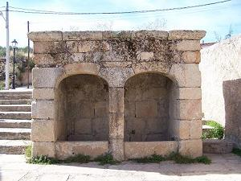
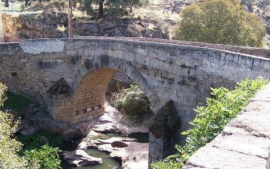
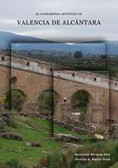

|
Valencia de Alcántara
Antiguo oppidium, de época romana se han conservado dos
puentes, un acueducto y una fuente. Del acueducto solo se conservan tres
arcos originales y restos de otros tres. Se supone que tenía 17 arcos.
Esta datado en el siglo I. Esta situado a 1 km en la zona de Calleja de la
Barca.
El puente de piedra es de un solo arco. Esta localizado en la calle del
Río. Por el discurría la calzada camino a Zafra. Del otro puente el de
Pontarrón solo se conservan las bases de los arcos. En sus alrededores se
pueden visitar los famosos dolmenes.
Ver Puentes Romanos
|

La fuente de Monroy se
localiza en la Calle Luis Braille. |
 |
|

|
Las investigaciones realizadas por
Bartolomé Miranda Díaz y Dionisio Martín Nieto que acaban de
publicar una extensa monografía sobre el Patrimonio Histórico
Artístico de Valencia de Alcántara a través de las fuentes
documentales, demuestran que; el Puente de Piedra data de 1622
(Archivo Histórico Nacional); la de la Fuente de Monroy, fue
construida según el contrato de obras conservado en las Actas
Municipales de Valencia en 1717; y el acueducto, cuyas obras se
iniciaron en 1575, según contrato de obras localizado en el archivo
de protocolos de Sevilla, siendo obra del arquitecto mayor de aguas
y fuentes de la ciudad de Sevilla Luis de Montalbán.
Para conseguir el libro o más información, contactar con el
ayuntamiento de
Valencia de Alcántara. |
|